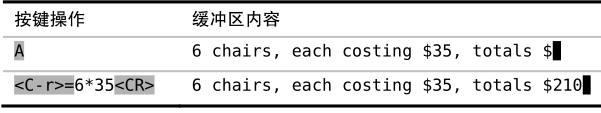

技巧16随时随地做运算
表达式寄存器允许我们做一些运算，并把运算结果直接插入到文档中。在本节我们将看到一个运用此强大功能的实例。
大部分的Vim寄存器中保存的都是文本，要么是一个字符串，要么是若干行的文本。删除及复制命令允许我们把文本保存到寄存器中，而粘贴命令则允许我们把寄存器中的内容插入到文档里。
不过表达式寄存器则是个另类，它可以用来执行一段Vim脚本，并返回其结果。在本节，我们将把它当成计算器来用。传给它一个简单的算术表达式，比方说1 + 1，那它就会给出结果2。对表达式寄存器所返回的文本，我们可以像用普通寄存器中的文本那样使用它。
我们可以用 = 符号指明使用表达式寄存器。在插入模式中，输入<C-r>= 就可以访问这一寄存器。这条命令会在屏幕的下方显示一个提示符，我们可以在其后输入要执行的表达式。输入表达式后敲一下<CR>，Vim就会把执行的结果插入到文档的当前位置了。
假设我们刚输入完下列内容：
我们想算一下总价，不过没必要找个信封在背面做演算，Vim可以帮我们做这件事，我们甚至连插入模式都不用退出。做法如下：

表达式寄存器远不止能做简单算术运算。我们将在技巧70中看到一些更高级的应用。